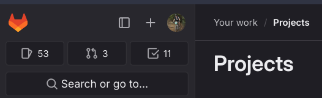
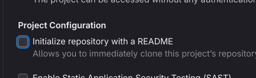
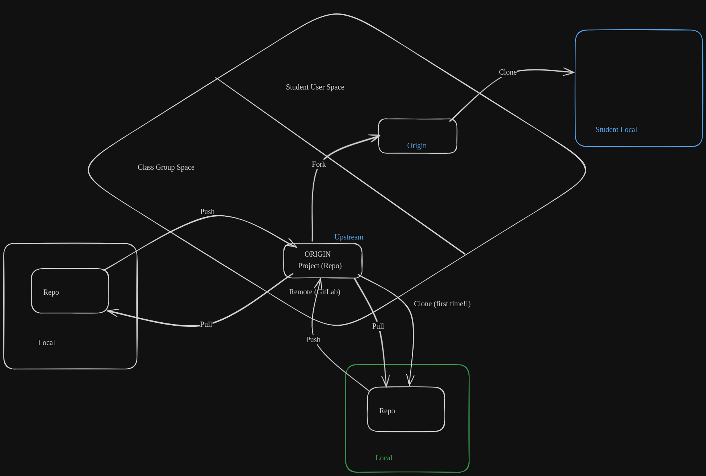

Git (Version Control) Fundamentals
BME554L - Spring 2026
Why Version Control?
- Maintain history of software development changes.
- Maintain multiple versions of software that are released.
- Tool for code review.
- Audit trail for compliance.
- Required for IEC 62304 (Medical Software), FDA V&V (510k clearance).
- Collaboration between multiple developers.
- Great skill to have on a resume.
Why git?
- Most popular distributed version control system
- Replaces centralized, single-point systems (e.g., subversion)
- Open-source
- Lightweight
Why not git?
- Learning curve non-trivial, especially for advanced usage
- Doesn’t work well with binary (non-text) data
- Doesn’t work well with large files (e.g., audio, video)
Remotes
Git Collaboration
- Local version control is very powerful, and if you are the only developer of a project and using a single computer exclusively, all that is necessary.
- But what if you want to collaborate with others / yourself on another system? Git Remotes!
Git Remotes
- A remote is another location where your git repository history exists.
- Remotes can be:
- On your local computer
- On a networked computer (e.g., server)
- On a cloud-based service (e.g., GitHub, GitLab, BitBucket)
- When starting a new git repository that will be shared (i.e., will have at least one
remote), you have a few ways to start things:
- Create a local git repository and then add a remote.
- Create a remote git repository and then
cloneit to your local computer. - :balloon: For this class, all of your assignment repositories will need to be shared via GitLab, so I will recommend you create them on GitLab first, and then clone them to your local computer.
Creating a new repository on GitLab
- :white_check_mark: Create a new repository on GitLab, named
my_first_git_repo.- :warning: Spaces are not allowed in repository names and create problems when working on the commandline, so use underscores or dashes instead.
+icon in the upper left :arrow_right:New project/repository

- Choose:
Create Blank Project - Choose Project Name:
my_first_git_repo
If this is a new repository that doesn’t already exist locally on your laptop, then you can choose to have GitLab create a README.md file; otherwise, deselect that default option.

- Choose:
Create Project
Clone a Repository
- Cloning a repository is only done the first time you want to get a copy of your remote repository on your local computer. (Future interactions with the remote repository will be done via
pushandpullcommands.) - You can clone directly using the
Gittools in VS Code, but I recommend you do it on the commandline so you can see what is happening. - Below are the steps to clone a repository.
- For all of this example code, do not replicate the
$; that indicates that this is a command you would enter in your Terminal or Git Bash session.
- Please CHANGE THE THINGS IN ALL CAPS.
- For all of this example code, do not replicate the
$ cd DIRECTORY_WHERE_YOU_WANT_TO_CLONE
$ git clone git@gitlab.oit.duke.edu:YOUR_NET_ID/my_first_git_repo.gitSuccess will look like:
Cloning into 'my_first_git_repo'...
warning: You appear to have cloned an empty repository.- You will not see that warning if you chose to have GitLab create a
README.mdfile when you created the repository.
Git Remote/Local Workflow

Initialize a Project Directory (not already on a remote)
- Make sure you are at the root level of your desired project directory (the “main” folder of the project).
$ git init- A
.git/directory will be created that stores all version history - Success will look like:
Initialized empty Git repository in YOURPROJECTDIR/.git/Local Workflow
Once you have a local git repository, either through cloning or initializing one, you can start working on your project. All of the following commands are valid when you are “inside” your project directory (root level or deeper). You can also execute all of these commands natively within VS Code (and more elegantly with GitLens within VS Code).
Git Status
$ git status - Files that are not tracked (“untracked”).
- Tracked files that have been modified since last committed.
- Files that are staged (explicitly added / removed) to be committed.
- Run
git statusfrequently to keep track of what you are doing. VS Code will show you the status “live” in the bottom left corner of the window.
What does git track?
gitwill only track files that you explicitly tell it to track.- Directories are only tracked if they contain tracked files.
- Untracked files can be added to a queue (staged) to be committed to a git history (in a separate step) using:
$ git add FILENAME(S) - Adding a file stages it for commit.
git stageis a direct alias forgit add. VS Code’s GitLens will use the term “stage” instead of “add”.
- Changes made to tracked files must be explicitly added to the commit queue too.
- Multiple files can be staged together to create a commit that logically should be bundled together.
While it is valid syntax to add an entire directory as git add . or to use wildcards to add mutliple files by a common pattern using git add *_SOME_PATTERN, I recommend you explicitly add files one at a time to avoid accidentally adding files you don’t want to track.
Committing Staged Files
- The following command will commit your staged files. A commit message is required, which can be entered in the editor that opens when you execute the command, or you can use the
-moption to enter a one-line commit message on the commandline.
$ git commit -m 'one line commit message goes between the quotes'- Committing is the process of capturing the specific state of files in the version history.
Commit Messages
- Need to include a commit message that describes why you are making these changes.
- You do not need to describe what has changed; that is done automatically by:
$ git diff FILE_NAME - Here are some examples of what a proper commit message looks like, such that when you perform a
git log, you thank your past self for knowing what and when you edited.
| Bad Commit Message | Good Commit Message |
|---|---|
| fixed issue | Fixed GND pour on my PCB to ensure DRC checks pass |
| added function | edited arduino code to user timers instead of sleep |
| boom | if you’re right at the deadline, this one is understandable |
| updated piece | updated CAD render for H3 neck to be at 75deg angle |
Git Add/Commit Shortcut
- A common operation is editing files that are already under version control and wanting to commit all of those changed files.
- There is a shortcut to do this quickly:
$ git commit -am 'commit message' Git Log
- You can view a history of your commits:
$ git log- Note that the first line of your commit message will be displayed in the log output.
- Includes your name and email address, as configured in
.gitconfig. - If you setup my
lgalias, you will see a “prettier” version of the output usinggit lg.
Can certain files/directories be “ignored”?
- Sometimes we will have files that we never want
gitto manage - These will always show up as
Untrackedif they are never added. - We can tell git to ignore these files/directories in a file called
.gitignore.- Create this file at the root of the project.
- Be sure to
addandcommitit!
- Create this file at the root of the project.
- Can use
/at the end of the name to indicate a directory name. - Can use
*as a wildcard to any characters in the name pattern match. - Certain types of projects will have default templates of files to ignore.
Example .gitignore:
$ cat .gitignore
build/*
.idea
.cache
.ipynb_checkpoints
.DS_Store
env/
venv/
.venv/Live Demo
Live demo time!
More Git Basics
How do a undo changes to a file?
- If you have modified a file that was already tracked and want to restore it to the previously-committed version:
git restore [file] - You can also revert to previously-committed versions older than the latest commit… but that is a more advanced topic.
Pushing/Pulling Git Commits
- Once a local repository is connected to a remote, you can:
- Push local commits to the remote (
git push) - Pull commits from the remote (
git pull)
- Push local commits to the remote (
You will always need to pull the latest commits from a repository before you push anything new.
More Advanced Git Workflows
Branching
- By default, your project is working on a branch called
main.
Some older versions of git used a default name of master, but that has been deprecated.* If your configuration is still using master, please consider changing the default branch name.
- Branches allow you to add/modify files, potentially with multiple commits, but without changing the files as they exist in
main. - Committed changes on your branch can be merged into
main(or another branch) when they are “ready”.
Steps to Create and Use a Development Branch
$ git branch BRANCHNAME # this creates a new branch
$ git checkout BRANCHNAME # this switches to the branch- If a branch already exists, you can just switch to it using
git checkout. git switchachieves the same behavior when swiching between branches.
You can create and checkout a branch using:
$ git checkout -b BRANCHNAME
OR
$ git switch -c BRANCHNAMENaming Branches
- It is important to use good branch names! This will be helpful for you when breaking up your tasks, and knowing what you should focus on developing in the specified branch.
- There isn’t a best practice for naming branches, but consider using the template:
functionality-in-my-project. - For example, if you are developing a library to calculate heart rate from an ECG signal, a good branch name would be
dev-calc-ecg-hr.
Branches on Remotes
- You can push a branch to your remote just like you would
main. - Git may prompt you to have to create the branch on
originwith the same name as the local branch:
$ git push --set-upstream origin BRANCHNAME- If you want to avoid having to manually set the upstream branch, you can set a configuration option to always do that for you. You probably set this up in the first week of class in your
.gitconfigfile, but if not:
$ git config --global push.autoSetupRemote trueMerging a Branch
- Once you are “done” developing on a branch, you can
mergeyour changes back into yourmainbranch (or another branch). - Merging is also the way that you can incorporate another developer’s code into your branches.
$ git checkout main # switch to the branch you want to merge into
$ git merge BRANCHNAME # merge the branch into the current branchMerging Approaches
- Merge: Creates a commit reflecting the merged content, in addition to the individual commits on the branch being merged.
- Squash: Create a single merge commit, “squashing” all of the commits of the feature branch into one commit.
- Rebase: Integrate the commits of the feature branch into your target branch by “replaying” them into the history.
- This can be the trickiest approach to use and can cause major headaches if you have already pushed commits to a remote.
- Probably best to avoid as you get familiar with merging.
- This can be the trickiest approach to use and can cause major headaches if you have already pushed commits to a remote.
Pull/Merge Requests
- You can also use the UI of GitHub/GitLab to merge one branch into another.
- These “requests” can allow you to:
- Review the differences between the branches.
- Provide feedback to developers before merging.
Issues
- Issues are used via the web UI to report bugs, request features, ask questions, etc.
- We will use Issues as the primary way to ask the TAs / Dr. Palmeri questions (you will need to add collaborators explicitly to your Private projects).
- Commits related to issues can automatically trigger action (e.g., closing, fixing) using certain commit message keywords.
Miscellaneous Topics
Add a Remote
- You can add a remote using the following syntax:
$ git remote add origin git@gitlab.oit.duke.edu:YOUR_NET_ID/YOUR_PROJECT_NAME.git- You can access the URL for a remote repository after you create it online.
- The default remote name is
origin. That name is arbitrary, but widely used. - You can have multiple remotes associated with a repository.
- URLs that start with
git@use SSH keys to authenticate you. - You can see the remotes associated with your local git repository as follows:
$ git remote -v
origin git@gitlab.oit.duke.edu:YOUR_NET_ID/YOUR_PROJECT_NAME.git (fetch)
origin git@gitlab.oit.duke.edu:YOUR_NET_ID/YOUR_PROJECT_NAME.git (push)Mac Users
If your Mac terminal doesn’t have tab autocompletion enabled when typing out your long branch name you created among other git commands, follow the steps from this link.
This will only work in your Mac terminal. If you’d like to enable this in VS Code as well, open up your preferences with Cmd + ,, and then navigate through this:
User -> Extensions -> Git.- Scroll down to the setting labeled
Terminal Git Editorand check this box. - You will need to restart your existing terminal inside of VS Code if one is already open.